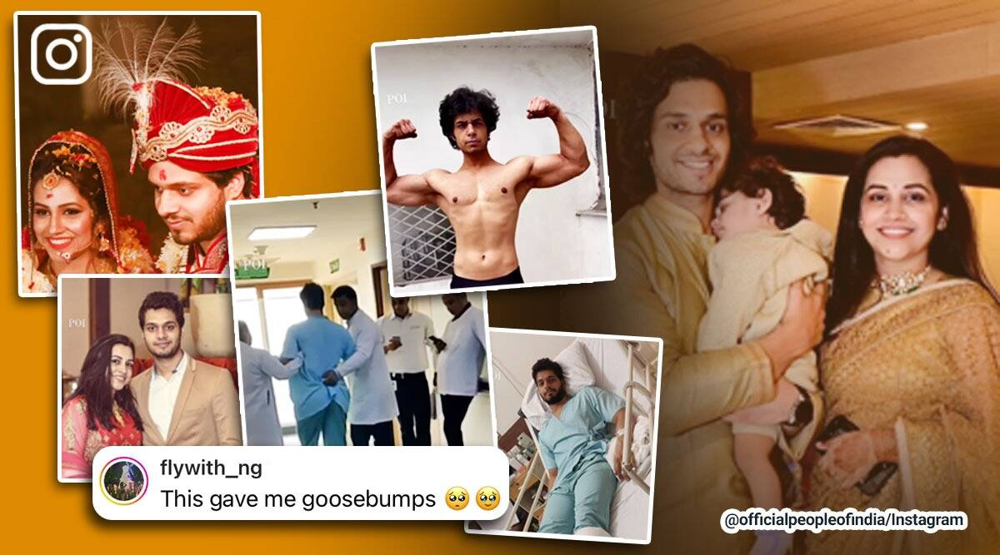

↠Man diagnosed with rare paralysing disorder becomes fitness instructor after recovery

←
While life is unpredictable, it can be really difficult to recover from tragedies that happen out of
the blue. It is often said that one should live life to the fullest and take nothing for granted. A
viral video now tells the inspiring story of a man who was diagnosed with a rare condition at age 26
and how he overcame it.This man also champion in MP.
The Instagram page Official People of India posted the video of Aditya Vashisht showing his journey
and recovery from the rare disorder. At 24, Vashisht got married after graduating from college. In
November 2018, he got sick and had high fever and flu but his test results showed no underlying
condition. One day, while brushing his teeth, the right side of Vashisht’s face got paralysed.